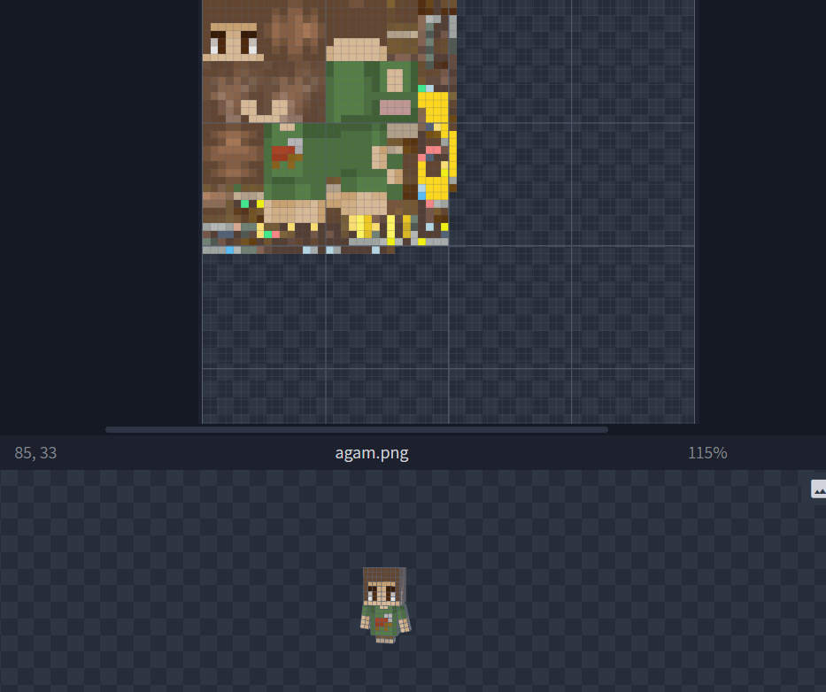
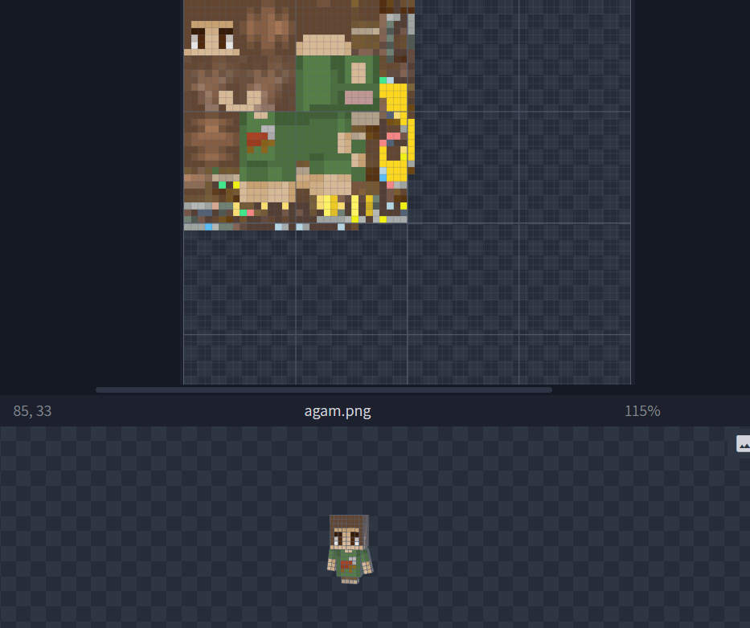

About Pop Model Creation
In this project, I worked on creating a custom POP model for Minecraft players, covering the full process from initial concept to in-game implementation. The model was built in Blockbench, with proper separation into body parts (head, body, arms, and legs), clean hierarchy and parenting, and full compatibility with Minecraft’s player model structure. I also created and mapped a custom texture, working directly with UV mapping to ensure each part of the model was textured accurately without distortion. The model was then integrated into the server using ItemsAdder, including configuration of custom model data, linking the model and textures, and validating correct rendering on players in-game. During integration, I adjusted scale, offsets, and rotations to ensure the model fit correctly on the player and did not interfere with existing animations or player visuals. I performed multiple in-game tests to verify version compatibility and visual consistency, refining both the model and textures as needed. This project strengthened my understanding of custom Minecraft models, the workflow between Blockbench and ItemsAdder, and the complete pipeline of creating and deploying custom visual content from design to live server usage.
 
